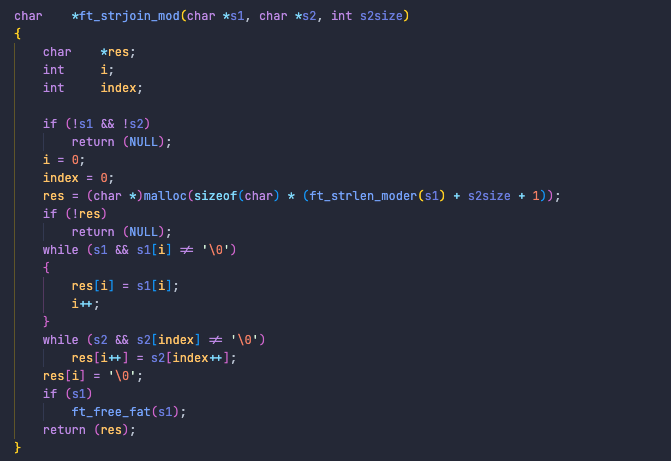

ABOUT ME
My Goal is to prove my skills in a position that will offer a rich learning experience
The projects I've completed thus far will serve as testimony that my knowledge and skills aquired are sound, that no matter the task at hand I am capable of perservering through the storms and tides that is the field of software engineering. The majority of my prior knowledge of programming came from self-learning sources, videos on Youtube and courses on Udemy. The first serious initiative I took to learn programming was as a highschool student enrolled in 2 computer science courses with Acellus Academy. The first course I took was related to logic gates, a subject which was later more firmly engraved into my mind by a class I took with 42 Abu Dhabi's accredited pathway. The second course I enrolled in was a course on basic Java programming. However, non of that education has even come close to the experience I've gained at 42. Now it is up to me to finish the common core. And finish I shall.
There were many hurdles I've had to overcome in order to be where I am today, non of those life lessons have gone to waist. Some lessons were harder than others, however, what's important is that they become an experience I've learned from.
42 Cursus Porjects completed
Intra Achievements
Cups of coffee
Some Notable Projects
Explore My Progress
Minishell

Minishell is a project in where 42 students learn how to implement multi-processing by incorporating the use of pipe(), dup2(), and execve() functions.
By parsing content entered into the prompt in such a manner as to make it easy to implement expansions and perform the execution operations as well as redirections, project minishell is in a sense creating your own mini version of a shell that is functional enough for complex operations. The image above ^ shows just some of the tasks that my minishell is capable of.
One invaluable aspect that minishell contributes to every student that reaches this level is teamwork. This group project is our first real experience working with others with the unified goal of finishing the project.
Since neither my teammate nor I had any experience with implementing pipes, we both took the initiative to learn. It took us about a month to fully complete the execution and integrate it with the parsing.
One part of my responsibility was to implement expansions, which in itself was a 3 week expedition that taught me a lot about string manipulation and implementing my own insertion functions from project libft (ft_strjoin(), ft_substr(), ft_strdup()).
Philosophers
Philosophers was an exciting project that requires multi-threading using pthreads and mutexes (or mutual exclusion). The idea was for a random number of philosophers to sit around a table and eat spaghetti. Philosphers eat and sleep for a user specified amount of time. The rest of the time the philosphers think about their life decisions. The task is to share forks (shared resources) amongst the philosophers whilest avoiding potential deadlocks that may cause two philosphers to stagnate. If philosophers don't eat within a user specified amount of time they die.
Cub3d

A project that introduces the concept of raycasting and the use of trigonometry in graphics and programming.
To create a 3d gaming world from a 2d map, it's important to understand that the inverse of the distance from the player to an object multiplied by a scaling factor (based on the size of the window) will give you the correct height to render a segment of the object. In order for the whole object to be rendered, the distances at each segment of the whole object have to be considered.
During the time of Wolfenstein 3D, a method called raycasting was used to determine the distances at each increment of the degree field of view. At every increment of the degree variable, a ray is cast to find the distance before rendering each segment of the window.
My initial approach was to create a set of functions that will deal with the conversion of polar and cartesian coordinates. In doing so, I can incorporate the use of nested while loops and increment the angle and the radius of the polar coordinates. By converting to cartesian I can then add the vector's x and y values to my player's x and y position. Comparing the result to the 2d map that was parsed allows me to distinguish between an object and empty space on the map.
This project is still ongoing, and I've realized that perhaps my method wasn't the most efficient way of doing things. However, the program does run without any problems. It's simply necessary for me to improve the efficiency of the raycasting algorithm. This project has taught me a lot in the implementation of trigonometric functions and it's purpose in programming.
(Currently Private) Github Repository
Libft
Libft (or library forty two), is the very first project we're asked to complete in the cursus. It serves as both the foundation and a collection of tools to be included within certain projects to come after. Throughout the majority of our c projects it's not permitted to use any string manipulation functions other than those we've created ourselves within project Libft. For example: included within the string library you can find a substr() function, or strdup(); these functions would not be permitted as we have our own ft_substr(), and ft_strdup() functions within libft. The functions included within the libft project are not just string manipulation but also include several functions for linked list, and memory manipulation.
Since the completion of my project Libft I've added several helpful functions to the collection; functions like get_next_line(), and ft_printf() are projects following that have proven benefits later in the cursus since we're only permitted to use printf() from the stdio.h library within certain projects. It's helpful to have my own version of printf included within my libft.
C++ Modules
I've learned more about object oriented programming (OOP) doing the C++ cluster than ever before. The modules include different OOP concepts like constructors, destructors, and inheritance.
So far I've completed 2 Modules that were mainly about the construction of classes, and am well underway to completing the 3rd project in the cluster which asks us to implement fixed point numbers.
Push_swap

My project Push_swap contains my first implementation of an advanced sorting algorithm that sorts up to 500 numbers with a limited number of moves. The idea is that numbers entered as argv arguments are inside stack A. Stack B of same size as stack A is given to help with the sorting, but is initially empty. I had to code an algorithm that would efficiently use the push and pop methods incorporated by stacks.
Pushing to a particular stack is simply placing an element on top of the stack. According to research I've done the most efficient way to sort the numbers in stack A is by first rotating the elements of the stack either by placing the last elements on top or the reverse. If the number on the top of the stack is less than the mediam of stack A you pop it from stack A and push it to stack B. After each element is popped and pushed I recheck the mediam of the stack.
Once stack A has only three elements left, I sort the remaining elements simply with rotating the stack and swaping the top element with the one below it. After which I proceed to repeat the rotating, popping and pushing, this time from stack B to stack A. Only after repeating the steps a few times do you end up with a sorted stack. This algorithm is called midpoint algorithm.
Many of my peers at the time suggested that I split stack A into segments / chunks and then find the smallest number in each chunk to pop and push to stack B. This algorithm turned out to be more efficient than taking the midpoint, however it brought forth other problems that involved finding the numbers that belonged to each chunk. This can only be achieved if the numbers are sorted first using any method available.
Explore more of my projects on my Github

Reflection
Looking back on all my past projects
Every project I've completed thus far have contributed to my skill-set, improving my communication, problem solving, and critical thinking. Since the start my curiosity and eagerness has grown exponentially, but so has my awareness that I'm not perfect, and still have a lot to learn. According to research I've done the best way to improve these skills is to be disciplined and always approach every situation with the mindset of a student, hence I do my best to never be arrogant, but maintain a pride in the work I've accomplished.
Some areas I feel I need to improve are time management and adaptability. Both of these areas are affected by changing circumstances in the working environment. One way that I'm improving these skills is by incorporating & implementing better schedules that are better suited to the environment I'm working in.
As for my technical skills I'm working on more efficient ways of implementing algorithms in a manner which any developer in the field can read and understand. A good way to ensure that my code is always structured well is by constructing a project outline and have proper naming regimes that makes sense in the context of the function they're applied in.
Skills
Explore my infinite skills
Technical Skills
Technical skills developed through completing projects
Shell Script
The knowledge of how to program shell script is the foundation of any new project within the 42 cursus as we constantly need to interact with unix terminals. The interaction itself is something I've been practicing since my piscine days where the recommended text editor was vim.
Two projects that really engraved shell script into my mind are Born2BeRoot and Minishell. Born2BeRoot requires students to not use any form of GUI for the project, and to structure a shell script (.sh) executable that will be executed every so often within the virtual machine. Minishell gives you the opportunity to learn how shell script is executed within the terminal.
Algorithms
Project Push_swap and Cub3d incorporate a lot of skill in developing algorithms that efficiently produce the results required. Having completed Push_swap I feel I have a firm grasp of algorithms and knowledge on how to develop and apply them to future projects.
Being in the process of developing Cub3d has made me realize how important mathematics is in the field of software development and especially game development. As I continue to produce submissions for the cursus I improve my ability to write perceive and formulate effective algorithms in my head.
Memory Management
Memory management is the ability to efficiently allocate memory, read / write to the address, and to free the memory that is not being used by the program. In C language we practice this skill by using malloc() and free() functions. In C++ thus far I've only used the 'new' and 'delete' keywords. Using valgrind within a linux docker container then allows us to check for leaks in the memory.
During the development of project get_next_line() I had to resubmit after my first attempt at submitting, the cause for the failure of the first submission possibly being the unsuccessful management of memory; after which one of my peers introduced me to valgrind. Since then I've submitted projects with successful management of memory.
C programming
The majority of our projects within the common-core of the cursus thus far have been in C language. Thus I believe my peers and I have extensive knowledge and experience producing C based projects extending from basic functions contained within Libft (e.g ft_strjoin(), or ft_substr()) to advanced projects like Minishell.
C++ programming
So far I've only submitted 2 C++ projects that focuses on ability to effectively create and implement C++ programs using functions from the string library. Classes and Object Oriented Programming (OOP) is also introduced in the C++ cluster.
Though I can't claim to be an expert in C++, many of the syntex and functions are based on C, so the transition is quite smooth in my opinion. Only the concepts OOP brought forth are new. Also I've prior experience with C++ since before I joined 42, most of the prior knowledge is self taught from videos on Youtube, and courses on sololearn.
Makefile
Except for project Born2BeRoot, and get_next_line(), every project we've created includes a Makefile that will compile the executable, or archive with either gcc or c++ compilors. As we've learned in project Libft, archives are useful when you want to include libraries of predefined tools that you created yourself within your current project.
Since project So_long I've invested quite a bit of time honing my skills in the creation of Makefiles.
Soft Skills
Soft Skills developed through day-to-day interactions, team projects, and practice
Problem Solving
On numerous occasions I've encountered problems within a project and had to debug on the fly. My biggest example of this was during exams where we're only given a text editor and terminal to develop and debug code. In order to successfully complete an exam you must have a structured process to debugging because there is no question that you'll encounter problems with your programs at least once; having a structured process will help you solve the issue quickly.
My personal approach to solving problems is to identify, formulate a solution, apply the solution, and check for other errors.
Communication
Communicating with peers, or colleagues, is essential to success. It is arguably one of the biggest reasons I've learned as much as I have. The theory is that through communicating with other people you learn different perspectives and views about how concepts should be implemented in different projects. By gathering a diverse set of ideas it allows me to formulate better solutions to problems. In group projects like Minishell, on many occasions your teammate might know the correct approach to implementing a solution, hence every conversation should be approached with the mindset of a student.
Leadership
As I continue developing group projects I sharpen my leadership skills by staying emotionally intelligent when dealing with conflicting ideas, distinguishing between efficient ways of implementing solutions, practicing effective communication, and recognizing each team member's skills in order to apply them where necessary.
Time Management
Time management is a great asset to have in order to meet deadlines, schedule meetings, and make time for personal development. One way I practice effective time management is by incorporating the use of calenders and schedules. By allocating set times for work and meetings I maintain awareness of when my time is flexible enough in order to help my peers and colleagues when they would like my input.
Emotional Intelligence
The ability to perceive, and manage emotions when events may not have turned out as planned. It is critical that you deal with conflicts in a way that is emotionally intelligent and works to benefit all parties involved, mitigating any issues that may require further action.
When I find myself in a situation that requires me to be emotionally intelligent I take two deep breaths, and decern whether or not my emotions have compromised my ability to make the right decisions.
Resume
As I continue to develop my skills I continue to adapt my resume